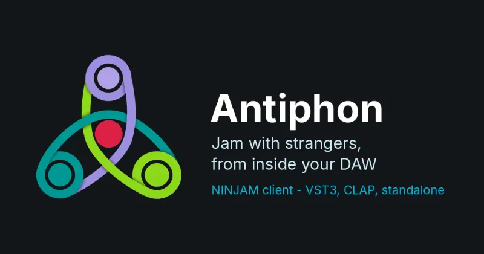
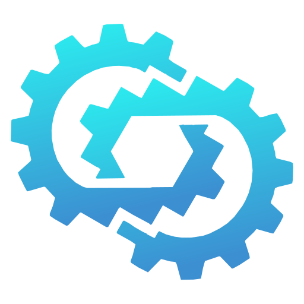
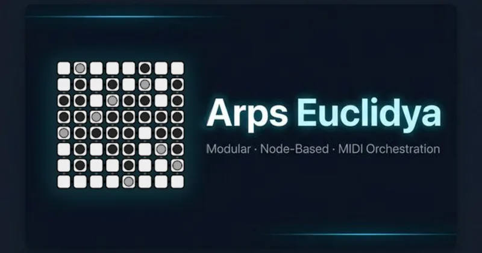

Antiphon
A NINJAM client shaped as an audio plugin. Jam with people over the internet without leaving your DAW, and record every player as a separate stem.
VST3, CLAP and standaloneantiphon.chalkwalkmusic.com

Lockstep
A step sequencer you play rather than configure: one grammar of scopes and verbs across the whole surface, per-step parameter locks, and tracks that host any sound engine.
VST3, CLAP, standalone, and AU on macOSlockstep.chalkwalkmusic.com

Arps Euclidya
A modular, node-based MIDI environment for rhythm and harmony: two Euclidean rhythm engines, chord logic, 32 global macros, multiple outputs and MPE.
VST3, CLAP and standalonearps.chalkwalkmusic.com